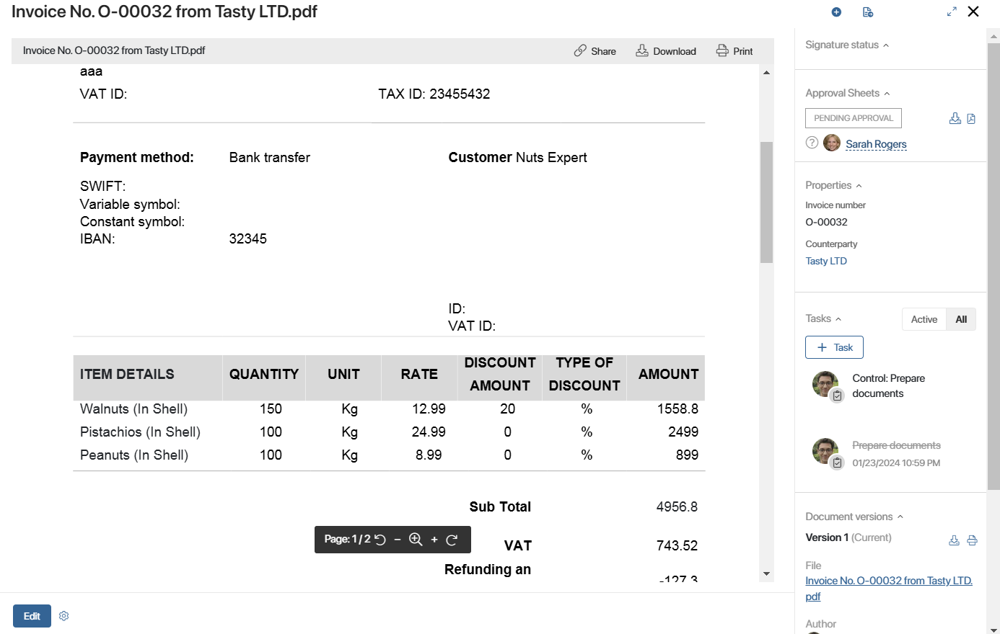
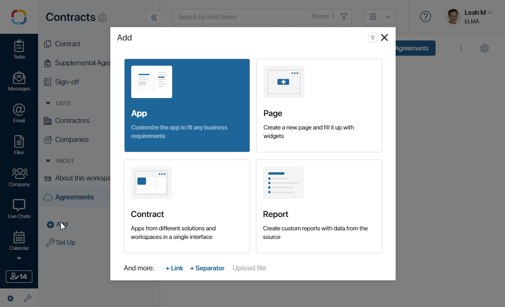
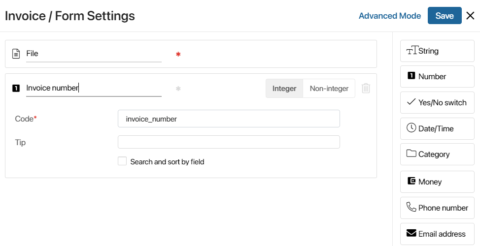
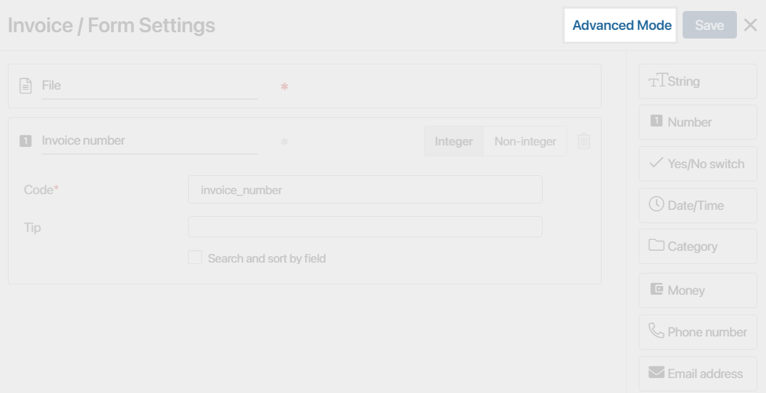
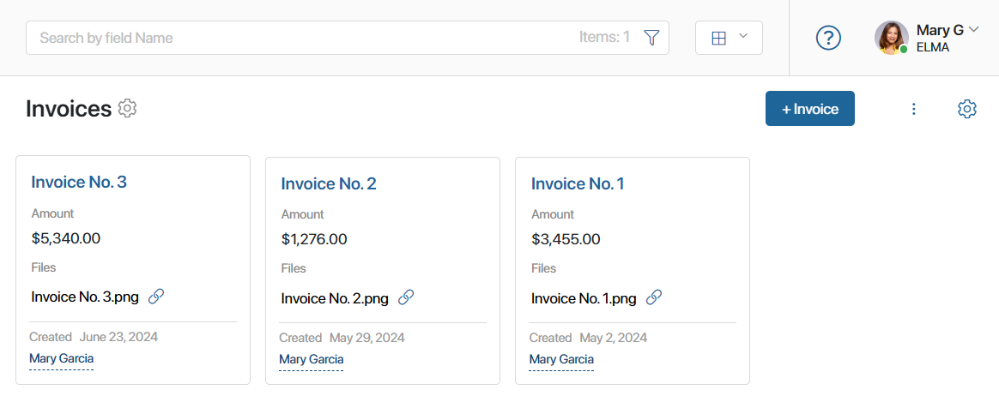
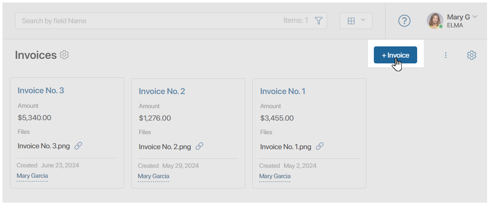
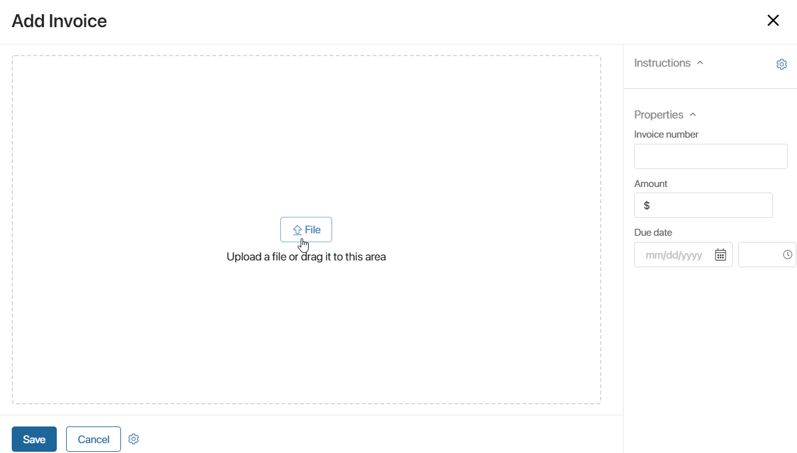

Document type apps are used for creating documents in BRIX, such as agreements, memos, invoices and so on.
You can organize centralized storage, register and find documents, add new versions and compare them with each other, use pre-built document routes for approval and review, and configure document workflows using business processes within app or workspace. Statuses help see at what stage the document currently is.
Here is an example of how the page of the Document type app item may look like:

Create a Document type app
начало внимание
Only users included in the Administrators group can create document-type apps.
конец внимание
Go to any workspace and click Add in the left menu. In the provided window, click App. Select Document and fill out the form:

- App Name*. The name of the app that will be shown in the left menu.
- App URL*. The URL for quick access to the app. The URL is created automatically, but you can change it if you wish to.
- Item Name. The name of the button for adding new app items.
- Type. Select Document.
- Visibility. Specify, who will be able to see the app in the left menu. You can change these settings later, if necessary.
- Visible to everyone. The app will be available to all users.
- Only to administrators. The app will be available only to the users included in the Administrators group.
- App Icon. The icon helps users quickly find the app in the left menu.
- View. Select the layout of app items.
After you fill in the data, click Create. A window where you can set up the document form will open.

The default File field on the form cannot be deleted because it stores the file containing the uploaded or generated document. The system supports multiple file formats.
By default, the document name is created from a template using the name of the uploaded file. This is why the Name key variable is hidden from the form settings. If you want the document name to be entered manually, change the item naming settings. To learn more, see Item name.
In the standard mode of form settings, the File field is a required one.
To add more fields, drag them from the right panel onto the main area of the form. You can read more about fields and their settings in System data types and App page forms.
You can set up custom forms for creating, viewing, and editing documents.
To do that, click Advanced Mode in the form settings window, next to the Save button.

In the advanced mode, the File field can be made optional. To do this, go to the creation form and remove the * marker from the field.
This is convenient if you do not have a ready-made file and are planning to generate it from a template during a business process. Don't forget to add the Edit app item activity to the process to transfer the generated file from the process context to the item page.
To learn more on how to customize a form in the advanced mode, see Configure forms in Advanced Mode.
Create an app item
An app stores documents of the same type. For example, the Invoices app stores all the company's invoices. Each document that belongs to an app is an app item.

To add a new app item, click the button in the top right corner of the app page. The name of this button depends on the app settings. 
In the opened window, add a file with a document and fill in the fields on the right panel. The fields on the panel may vary; they are defined when you are creating the app.

Like in regular apps, you can add buttons to the form of a Document type app and configure automatic process start. These actions are only available to the users included in the Administrators group. To learn more about these settings, see Manage buttons on app item pages.
Found a typo? Select it and press Ctrl+Enter to send us feedback